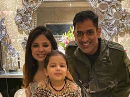

PERSONNAL LIFE
➱His ancestral village is Lwali, which is in Jaiti taluka of Almora district of the Uttarakhand state. The village has population of 20 to 30 families. His father Pan Singh Dhoni left the village in 1970 for employment. He eventually settled in Ranchi. Dhoni's uncle Dhanpat Singh Dhauni and his cousin Hayat Singh Dhauni still live in Lwali
➱He married Sakshi Singh Rawat on 4 July 2010.
➱The wedding took place in Dehradun, one day after the couple got engaged. Dhoni and his wife have one daughter, Zeeva Dhoni.
➱Dhoni is an enthusiast of the Indian Army. While spending a day with the parachute regiment in Ranchi, Dhoni said, "Since childhood I wanted to join the Army. Seeing the soldiers, I thought one day I'll be the same".
➱He holds the post of vice-president marketing in India Cements Ltd. The company is headed by former BCCI president and IPL franchise Chennai Super Kings owner.